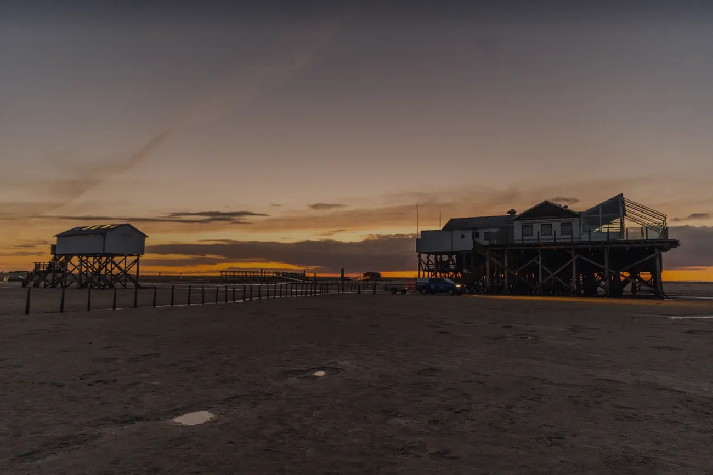

SALT & SILVER SPRITZ
Noilly Prat Ambre / Martini Riserva Bitter / Prosecco D.O.C / Soda
11,00 €
In Hamburg our restaurants are inspired above all by our travels around the world. In Sankt Peter-Ording we let the region around the Eiderstedt peninsula impress us.
We work with cattle and lambs that graze on the local salt marshes, mussels and oysters from the North Sea, and fish you can enjoy with a clear conscience. Plus simple yet refined vegetarian treats from the farms nearby, grilled crisp and smoky over an open fire.
With that, mostly German wines, often organic and unfiltered, and breathtaking light on the terrace.


No frills, but full of flavour. Everyone orders à la carte. Evening menu 5 – 8:30 pm, day menu 12 – 3:30 pm.
Noilly Prat Ambre / Martini Riserva Bitter / Prosecco D.O.C / Soda
11,00 €
Martini Floreale AFG / grapefruit / soda / lime
11,00 €
Verjus / elderflower / lemon balm
8,00 €
Martini Bianco / tonic / soda / lemon
11,00 €
Grey Goose vodka / lemon / passion fruit / vanilla
11,00 €
Bombay Sapphire / Thomas Henry tonic water / lemon
9,50 €
Patron Tequila Silver / lime / salt / Thomas Henry grapefruit soda
9,50 €
Mezcal Encantado / passion fruit / ginger beer
10,50 €
Bombay Sapphire Premier Cru / Noilly Prat Rouge / Martini Riserva Bitter
14,00 €
Grey Goose vodka / espresso / Kahlua coffee liqueur
14,00 €
with jalapeño-coriander gel and radish, or plain with lemon · 3/6/12 pcs
13/24/45 €
with pepper jam, kumquat, herb salad, golden beet compote
19 €
with ponzu, shiso, cucumber, trout caviar
18 €
roast beef, smoked mackerel cream, samphire, fried capers
19 €
with mussels, ling, peppers, coriander, preserved-lemon aioli
34 €
on pumpkin risotto & bay leaf oil
36 €
dry-aged on the bone from Galloway cattle, Thai BBQ sauce, fries, salad · per 100 g
14 €
dry-aged from Galloway cattle, Thai BBQ sauce, fries, salad · per 100 g
16 €All grill dishes are served with crispy new potatoes & green salad.

from Denmark, pimientos de Padrón, yoghurt sauce
32 €
from Germany, butterfly cut, with salsa verde
34 €
butterfly cut, from the Bay of Biscay, herb beurre blanc
34 €
whole, from Denmark, with caper beurre blanc · per 100 g
11 €
from Denmark, herb beurre blanc · per 100 g
13 €
with chocolate brownie, tonka bean, poppy seed, bay leaf oil, nut crumble
9,50 €
with mascarpone cream, lemon gel & Tobi's raspberries
11 €
sourdough bread with Theodora's olive oil & sea salt flakes
6,50 €with jalapeño-coriander gel and radish, or plain with lemon · 3/6/12 pcs
13/24/45 €
with remoulade, herb and onion salad
10 €
with marinated pumpkin, radicchio, walnut, dyke cheese, orange
14,50 €
from Himbeertobi with tahini foam, spiced chilli crunch, herb salad
18 €
the day's harvest from Himbeer-Tobi, pumpkin purée, beetroot hummus, sesame crunch
22 €with mussels, ling, peppers, coriander, preserved-lemon aioli
34 €
with fries, tzatziki, amber sauce, herb salad
24 €
coalfish from Denmark, in beer batter with harissa aioli, fries, herb salad
23 €
with mashed potatoes, buttered carrots, mustard sauce
18 €
with berry compote and cinnamon
9,50 €One of everything, please! For two people, to share in the middle of the table. Daily from 5 pm, € 65 per person.
sourdough bread with Theodora's olive oil & sea salt flakes
with jalapeño-coriander gel and radish
with pepper jam, kumquat, golden beet compote
with ponzu, shiso, cucumber, trout caviar
with mussels, ling, peppers, coriander, preserved-lemon aioli
from Himbeer-Tobi, tahini foam, spice crunch, herb salad
with chocolate brownie, tonka bean, poppy seed, bay leaf oil, nut crumble
Bottled wines, spirits, coffee and tea are in the menu.
Excerpt from the menu as it is online. Prices in euros. We work seasonally and regionally, so the menu may change. Children up to 3 years eat pasta or mashed potatoes with vegetables free of charge. Some of the dish photos are generated placeholders until the kitchens have their own pictures.

After a few years in Sankt Pauli we were drawn to nature, to the North Sea coast to be exact. With Salt & Silver am Meer we are fulfilling a long-held dream: to work and live by the sea.
We were allowed to give the legendary stilt house the Salt & Silver touch after 44 years as a family business. Nowhere else is there a view as wide as here, in the middle of the sand, eight metres up.

Andy's Highland cattle live self-sufficiently on the salt marshes in front of our restaurant from April to November. Fish, lamb, cheese and vegetables come from farms in the region.



Working by the sea,living by the sea.